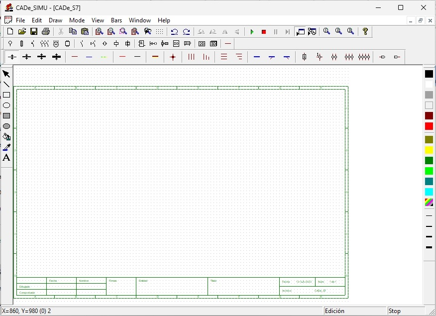
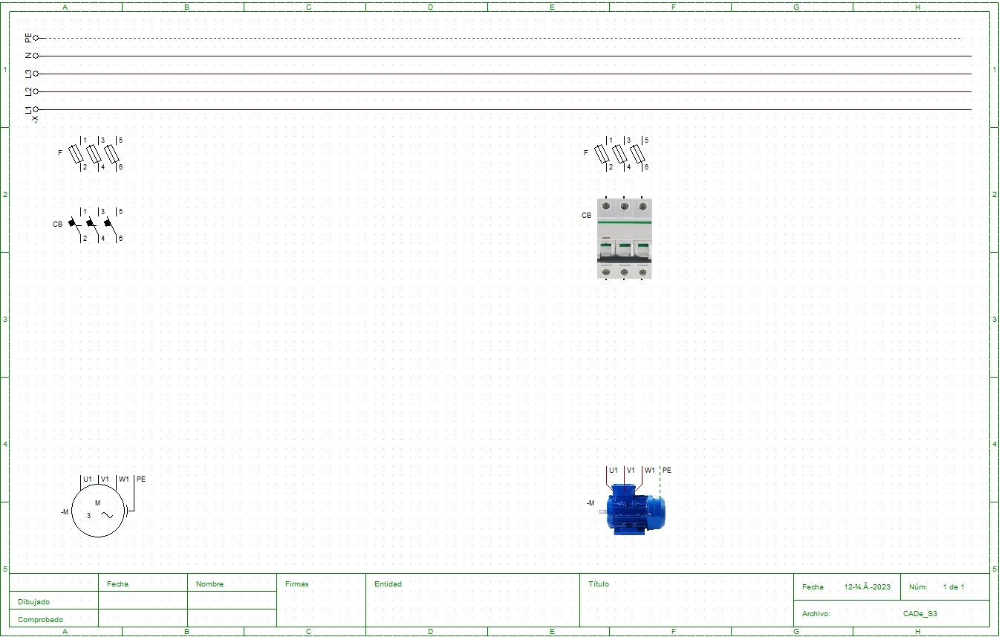

CADe SIMU เป็นโปรแกรมฟรีสำหรับเขียนแบบและจำลองวงจรควบคุมไฟฟ้าด้วยสัญลักษณ์แบบ IEC พัฒนาโดยผู้เขียนบล็อก canalPLC จากสเปน วิชานี้ใช้ CADe SIMU เขียนแบบทุกบท เพราะเมื่อวาดเสร็จ กดจำลองแล้วจะรู้ทันทีว่าวงจรทำงานตามที่ตั้งใจหรือไม่ หน้านี้แนะนำหน้าต่างของโปรแกรม การตั้งค่าครั้งแรก และวงจรแรก: แหล่งจ่าย 3 เฟส ฟิวส์ เบรกเกอร์ และมอเตอร์ ใบงานที่ 1 ครูแจกในคาบปฏิบัติ
CADe SIMU is a free program for drawing and simulating electrical control circuits with IEC-style symbols, written by the author of the Spanish canalPLC blog. This course uses it for every drawing, because once a circuit is drawn a press of the simulate button shows at once whether it works as intended. This page tours the program window, the first-time settings and a first circuit: a three-phase supply, fuses, a circuit breaker and a motor. Lab sheet 1 is handed out in class.
เมื่อเปิดโปรแกรม จะเห็นแผ่นเขียนแบบที่มีกรอบ ตารางพิกัด A–H กับ 1–5 และกรอบชื่อแบบที่มุมล่าง ส่วนประกอบของหน้าต่าง:
When the program opens you see a drawing sheet with a border, grid references A–H and 1–5, and a title block in the bottom corner. The parts of the window:

.cad เอง เช่น 65xxxx_ใบงาน1.cad.cad extension yourself, e.g. 65xxxx_lab1.cad.ไฟล์ใบงานแผ่นที่ 2 ที่ครูแจกวางอุปกรณ์ไว้ให้แล้ว: เส้นเมน -X (L1 L2 L3 N PE) ฟิวส์ 3 ขั้ว F เบรกเกอร์ 3 ขั้ว CB และมอเตอร์ -M โดยแต่ละอุปกรณ์มีทั้งสัญลักษณ์ (ซ้าย) และภาพเสมือนจริง (ขวา) งานของนักศึกษาคือ ต่อสาย:
แบบที่อยู่ถัดจากภาพใบงานคือคำตอบที่เขียนตามสัญลักษณ์ IEC: ลำดับจากบนลงล่าง เส้นเมน → ฟิวส์ → เบรกเกอร์ → มอเตอร์ เลขขั้วเขียนกำกับทุกจุด และสายดินเป็นเส้นประสีเขียว
Sheet 2 of the instructor's lab file has the devices already placed: supply rails -X (L1 L2 L3 N PE), a three-pole fuse F, a three-pole breaker CB and a motor -M, each as a symbol (left) and as a picture (right). The student's job is the wiring:
The drawing next to the lab-file picture is the answer in IEC symbols: from top to bottom, rails → fuses → breaker → motor, every terminal numbered, and the earth as a green dashed line.

คำตอบ: วงจรกำลังมอเตอร์ 3 เฟส ผ่านฟิวส์ F และเบรกเกอร์ CB
Answer: three-phase motor power circuit through fuses F and breaker CB
| ช่อง | ความหมาย | กรอกอะไร |
|---|---|---|
| Título | ชื่อแบบ | เช่น วงจรกำลังมอเตอร์ 3 เฟส ต่อผ่านฟิวส์และเบรกเกอร์ |
| Dibujado · Nombre · Fecha | ผู้เขียนแบบ · ชื่อ · วันที่ | ชื่อนักศึกษาและวันที่เขียน |
| Comprobado | ผู้ตรวจแบบ | เว้นไว้ให้ครูลงชื่อ |
| Firmas | ลายมือชื่อ | ลงชื่อเมื่อพิมพ์ |
| Entidad | หน่วยงาน | ชื่อสถานศึกษาและห้อง |
| Archivo · Núm. | ชื่อไฟล์ · แผ่นที่ | ชื่อไฟล์ .cad และเลขแผ่น เช่น 1 de 2 (แผ่นที่ 1 จาก 2) |
| Field | Meaning | Fill in |
|---|---|---|
| Título | title | e.g. three-phase motor power circuit through fuses and a breaker |
| Dibujado · Nombre · Fecha | drawn by · name · date | the student's name and the date |
| Comprobado | checked by | left for the instructor |
| Firmas | signatures | signed on the printout |
| Entidad | organisation | school name and class |
| Archivo · Núm. | file · sheet number | the .cad file name and the sheet number, e.g. 1 de 2 (sheet 1 of 2) |
การอ่านป้ายพิกัด การต่อขั้วมอเตอร์ และการเขียนวงจรกำลังมอเตอร์ด้วย CADe SIMU มี 4 ตอน: (1) อ่านป้ายพิกัดมอเตอร์ในห้องปฏิบัติการและมอเตอร์ 7.5 kW (2) เขียนการต่อสะพานในกล่องขั้ว 4 แบบ (3) ต่อสายและจำลองวงจรกำลังใน CADe SIMU ทั้ง 3 เฟสและ 1 เฟส พร้อมกรอกกรอบชื่อแบบ (4) คำถามท้ายใบงาน ทบทวนหน้า 1.1–1.3 ก่อนทำ
Reading nameplates, connecting motor terminals and drawing motor power circuits in CADe SIMU, in four parts: (1) read the nameplates of the lab motor and of a 7.5 kW motor; (2) draw the links in the terminal box for four cases; (3) wire and simulate the three-phase and single-phase power circuits in CADe SIMU and fill in the title block; (4) questions. Review pages 1.1–1.3 first.
ใบงานที่ 1 ครูแจกเป็นกระดาษในคาบปฏิบัติ ไม่มีให้ดาวน์โหลด เตรียมตัวโดยอ่านหน้า 1.1–1.3 และลองภาพจำลองทุกหน้าให้ครบก่อนมาเรียน
Lab sheet 1 is handed out on paper in the practical session; it is not available for download. Prepare by reading pages 1.1–1.3 and trying every simulation before class.